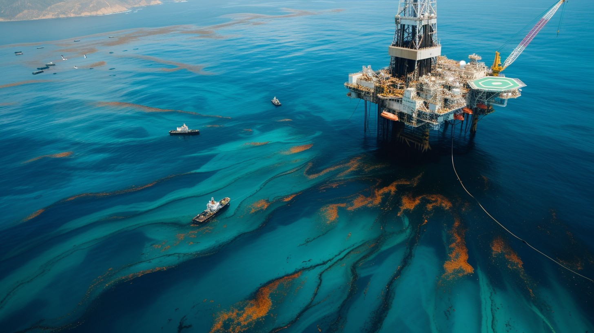

Addressing the Major Threats to Marine Ecosystems
Climate change
Climate change can be considered as one of the major threats to the marine ecosystems. Rising temperatures, sea level rise, and acidification are disrupting local ecosystems and fisheries. It has led to events such as coral bleaching, species migration, and altered metabolic rates. Ocean acidification, driven by increased CO 2 absorption, hinders calcifying organisms like corals and shellfish from building their calcium carbonate structures, thereby affecting entire food webs. Sea level rise poses a direct threat to coastal habitats such as mangroves and salt marshes, which serve as nurseries for many fish species and protect shorelines from erosion. As these habitats are eroded, not only do we lose critical biodiversity, but coastal communities also become more vulnerable to storms and flooding. Saltwater intrusion into freshwater systems affects drinking water supplies and agriculture, further impacting human livelihoods.
Over fishing
Overfishing refers to the practice of catching fish from a body of water at a rate that is too high for the fish population to replenish itself naturally. This unsustainable exploitation of marine resources leads to the depletion of fish stocks, threatening the balance of ocean ecosystems and the livelihoods of communities that depend on fishing. Overfishing is driven by a combination of factors, including high consumer demand, lack of effective management, and illegal fishing activities. The consequences of overfishing are far-reaching, affecting biodiversity, food security, and economic stability. To address this issue, it is crucial to implement and enforce sustainable fishing practices, establish marine protected areas, and promote awareness about the importance of conserving marine life. By taking these steps, we can help ensure the health and sustainability of our oceans for future generations.
Pollution
Ocean pollution poses a grave threat to marine ecosystems, impacting their health and stability. Plastics, are extremely prevalent in our seas, breaking down into harmful microplastics that are ingested by marine organisms, causing widespread harm and death. Chemical pollutants from industrial and agricultural sources poison marine life, disrupting reproductive cycles and weakening immune systems. Oil spills coat marine animals, suffocating them and devastating their habitats. These pollutants collectively alter marine habitats and food chains, leading to reduced biodiversity and ecosystem imbalance. Urgent global action is needed to curb ocean pollution through stricter regulations, sustainable practices, and public awareness campaigns to safeguard the delicate balance of our oceans and preserve marine life for future generations.
